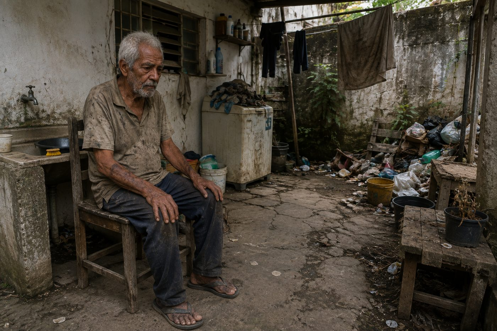

Peça a senha do caso à professora.
Você encontra Seu José sentado sozinho no quintal dos fundos, perto do tanque de lavar roupa. Suas roupas estão sujas e surradas. Ao lado, um monte de lixo acumulado e roupas penduradas no varal.

Passe o mouse ou o toque pela foto da cena — clique nos pontos destacados.